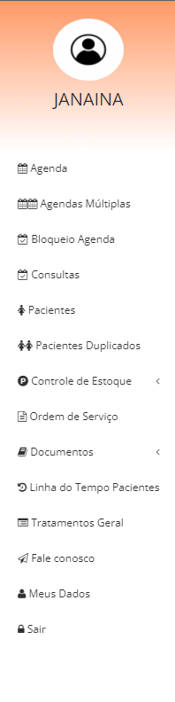

Secretária
Funções da secretaria:
No sistema EmbryoAll, cabe a secretária a função de agendamento das consultas e procedimentos realizados pela clínica assim como informar aos demais usuários o status da paciente, mostrando por exemplo se a consulta foi confirmada, se a paciente já se encontra na clínica, se ela já está sendo atendida e se a consulta já foi finalizada.
A secretária também tem a responsabilidade de realizar todo o cadastro da paciente.
Obs: Quanto mais completo o cadastro melhor para todos os usuários.

Para pesquisar consultas, basta clicar no filtro desejado adicionar uma data de início e uma de fim (obrigatório) e clicar em pesquisar.
Para alterar uma consulta basta clicar no ícone a frente da consulta, fazer a alteração desejada e clicar em salvar.
Para impressão adicione uma data de início e uma de fim clica no ícone da impressora que um arquivo pdf será gerado para impressão.
Para finalizar os cadastros das pacientes, basta clicar no ícone de edição que se encontra a frente do nome da paciente e finalizar o cadastro. É possível adicionar foto da paciente clicando em adicionar foto, selecionando o arquivo em seu computador e concluindo.
Para realizar o cadastro, basta clicar no botão cadastrar que um ambiente similar a um editor de texto irá abrir, adicione um título crie seu documento e não se esquece de colocar as datas de criação e de revisão que são exigidas pelo órgão fiscalizador.
Obs:> Se você já tiver os pops digitados em seu computador, basta copiar e colar para dentro do sistema. Coloque o título, copie e cole o corpo do documento na área de edição de texto, coloque as datas de criação e revisão e clique em salvar.
Para isso basta digitar o nome da paciente na busca e clicar em pesquisar.
Menu da Secretária
2.1 – Agenda:
A secretária terá acesso a agenda geral e segmentada. Para mais informações sobre a agenda clique aqui.2.2 – Consultas:
Acesso a todas consultas com diferentes tipos de filtros, opção de editar consultas e também impressão de uma listagem de consultas por período de tempo.Para pesquisar consultas, basta clicar no filtro desejado adicionar uma data de início e uma de fim (obrigatório) e clicar em pesquisar.
Para alterar uma consulta basta clicar no ícone a frente da consulta, fazer a alteração desejada e clicar em salvar.
Para impressão adicione uma data de início e uma de fim clica no ícone da impressora que um arquivo pdf será gerado para impressão.
2.3 – Pacientes:
A área do paciente é onde será finalizado o cadastro das novas pacientes agendadas no pré cadastro e onde a secretária poderá realizar as buscas de todas as pacientes da clínica, assim como realizar qualquer tipo de alteração cadastral.Para finalizar os cadastros das pacientes, basta clicar no ícone de edição que se encontra a frente do nome da paciente e finalizar o cadastro. É possível adicionar foto da paciente clicando em adicionar foto, selecionando o arquivo em seu computador e concluindo.
2.4 - Botão Pop`s:
É neste botão que a secretária irá realizar o cadastro de seus pop’s (Procedimento Operacional Padrão).Para realizar o cadastro, basta clicar no botão cadastrar que um ambiente similar a um editor de texto irá abrir, adicione um título crie seu documento e não se esquece de colocar as datas de criação e de revisão que são exigidas pelo órgão fiscalizador.
Obs:> Se você já tiver os pops digitados em seu computador, basta copiar e colar para dentro do sistema. Coloque o título, copie e cole o corpo do documento na área de edição de texto, coloque as datas de criação e revisão e clique em salvar.
2.5 – Linha do tempo:
Através desse botão é possível visualizar TUDO já realizado pela paciente dentro da clínica, como por exemplo: - Consultas, Exames e Procedimentos.Para isso basta digitar o nome da paciente na busca e clicar em pesquisar.